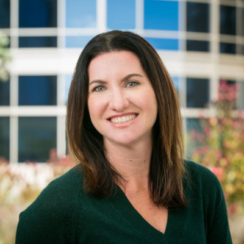

Welcome to Vero Consulting LLC. Navigating the path from biological discovery to clinical application
is the most critical challenge in drug development. I provide expert strategic consulting for
pharmaceutical and biotech companies, leveraging over a decade of leadership experience in
translational medicine at Genentech.. My mission is to help you design and execute robust,
data-driven translational and biomarker strategies that accelerate your programs, mitigate risk, and
deliver transformative medicines to patients.

My name is Veronica Anania, Ph.D. For more than 10 years, I have been at the forefront of translational
science in the biotech industry, leading teams and initiatives to translate complex biological
insights into clinical impact.
As a Director and Senior Principal Scientist in Translational Medicine at Genentech, I led numerous
cross-functional teams, guiding molecules from candidate nomination through pivotal clinical
development and initial registration. A key achievement was establishing the Translational Medicine
Mass Spectrometry Clinical Proteomics Laboratory from the ground up, creating a world-class facility
to discover decision-enabling biomarkers for clinical programs.
My work has spanned dozens of clinical studies across Neuroscience, Immunology, and Rare Diseases. I
have a proven track record of authoring biomarker sections for global BLA filings, presenting
strategies to governance committees, and fostering collaborations with academic and industry
partners to drive innovation.
I hold a Ph.D. in Molecular and Cell Biology from the University of California, Berkeley, and a B.S.
from the University of California, Santa Cruz. Now, through Vero Consulting, I offer my deep
strategic and scientific expertise to help your organization achieve its drug development goals.
I offer comprehensive consulting services tailored to the unique needs of your drug development
programs. My expertise is focused on creating and implementing actionable strategies that yield
clear, interpretable results for informed decision-making.
-
Translational & Clinical Biomarker Strategy
I provide end-to-end guidance on developing and executing biomarker strategies that support every stage
of the drug development pipeline.
-
Strategy Design: Designing comprehensive translational plans for all phases, from research
and Phase 1/2 through Phase 3 and post-marketing studies.
-
Regulatory Support:Deep experience in authoring and reviewing biomarker sections for
regulatory documents, including study protocols, clinical study reports, and global BLA filings.
-
Risk Mitigation: Proactively identifying scientific and technical risks and developing
effective mitigation strategies to ensure programs stay on track.
-
Cross-Functional Leadership Coaching: Expertise in leading matrixed, cross-functional teams
to ensure alignment and execution of complex biomarker plans.
-
Clinical Proteomics & Mass Spectrometry
Leveraging my experience as the Director of a leading clinical proteomics lab, I offer specialized
support for your 'omics initiatives.
-
Technology & Platform Guidance: Advising on the use of cutting-edge mass spectrometry-based
approaches as well as complementary platforms like Olink and SomaScan.
-
Development: Support for developing novel small and large molecule multiplexed mass
spectrometry panels to measure critical biomarkers.
-
CRO Management: Guidance on evaluating and partnering with CROs for proteomic, lipidomic,
and metabolomic services to increase efficiency and bandwidth.
-
Therapeutic Area Expertise
My direct, hands-on experience allows me to provide immediate, context-specific contributions to programs
in several key therapeutic areas.
-
Neuroscience: Including Alzheimer's Disease and Multiple Sclerosis.
-
Immunology & Autoimmune Disorders: Including Neuromyelitis Optica Spectrum Disorder (NMO),
Lupus, and other rare autoimmune diseases.
-
Rare Diseases: Deep familiarity with the unique challenges of developing therapeutics and
biomarker strategies for rare disease indications.
Is your team facing a complex translational challenge? Are you looking to build a robust biomarker
strategy to de-risk your clinical program and accelerate your timeline?
I am eager to learn about your specific needs and discuss how my experience can directly benefit your
organization25. Reach out to begin the conversation.
Email: veronica@veroconsultingllc.com
LinkedIn: https://www.linkedin.com/in/veronica-anania-phd